The TikZ and PGF Packages
Manual for version 3.1.9a
Libraries
61 Paper-Folding Diagrams Library
TikZ Library folding ¶
\usetikzlibrary{folding} %
LaTeX
and plain
TeX
\usetikzlibrary[folding] % ConTeXt
This library defines pic types for creating paper-folding
diagrams. Many thanks to Nico van Cleemput for providing most of
the code.
Here is a big example that produces a diagram for a calendar:
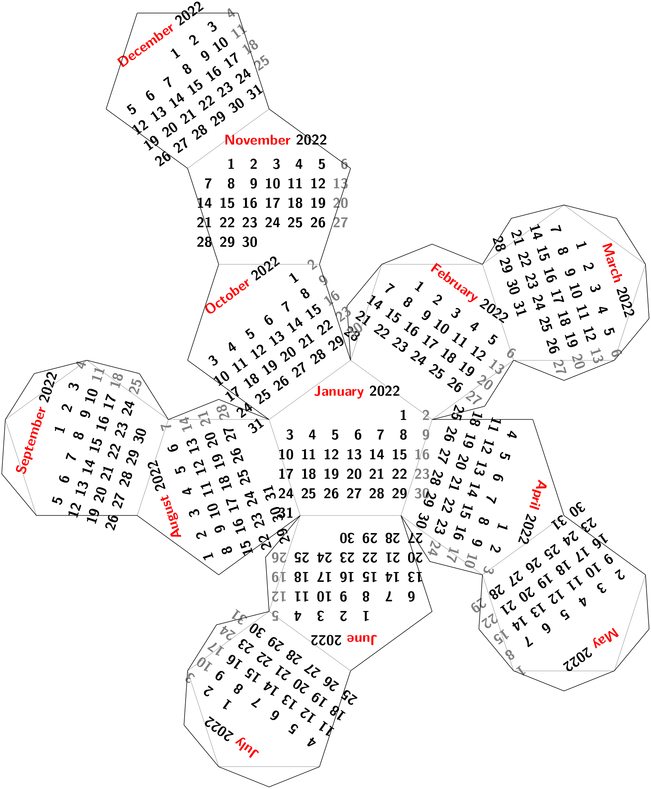
\usetikzlibrary {calendar,folding}
\sffamily\scriptsize
\tikz \pic [
transform shape,
every calendar/.style={
at={(-8ex,4ex)},
week list,
month label above centered,
month text=\bfseries\textcolor{red}{\%mt} \%y0,
if={(Sunday) [black!50]}
},
folding line length=2.5cm,
face 1={ \calendar [dates=\the\year-01-01 to
\the\year-01-last];},
face 2={ \calendar [dates=\the\year-02-01 to
\the\year-02-last];},
face 3={ \calendar [dates=\the\year-03-01 to
\the\year-03-last];},
face 4={ \calendar [dates=\the\year-04-01 to
\the\year-04-last];},
face 5={ \calendar [dates=\the\year-05-01 to
\the\year-05-last];},
face 6={ \calendar [dates=\the\year-06-01 to
\the\year-06-last];},
face 7={ \calendar [dates=\the\year-07-01 to
\the\year-07-last];},
face 8={ \calendar [dates=\the\year-08-01 to
\the\year-08-last];},
face 9={ \calendar [dates=\the\year-09-01 to
\the\year-09-last];},
face 10={\calendar [dates=\the\year-10-01 to
\the\year-10-last];},
face 11={\calendar [dates=\the\year-11-01 to
\the\year-11-last];},
face 12={\calendar [dates=\the\year-12-01 to
\the\year-12-last];}
] {dodecahedron
folding};
The foldings are sorted by number of faces.
Pic type tetrahedron folding ¶
This pic type draws a folding diagram for a tetrahedron. The following keys influence the pic:
/tikz/folding line length=⟨dimension⟩(no default) ¶
Sets the length of the base line for folding. For the dodecahedron this is the length of all the sides of the pentagons.
/tikz/face 1=⟨code⟩(no default) ¶
The ⟨code⟩ is executed for the first face of the dodecahedron. When it is executed, the coordinate system will have been shifted and rotated such that it lies at the middle of the first face of the dodecahedron.
/tikz/face 2=⟨code⟩(no default) ¶
Same as face 1, but for the second face.
/tikz/face 3=⟨code⟩(no default) ¶
/tikz/face 4=⟨code⟩(no default) ¶
There are further similar options for more faces (for commands shown later).
Here is a simple example:
The appearance of the cut and folding lines can be influenced using the following styles:
/tikz/every cut(style, initially empty) ¶
Executed for every line that should be cut using scissors.
/tikz/every fold(style, initially help lines) ¶
Executed for every line that should be folded.
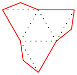
\usetikzlibrary {folding}
\tikz \pic[
every cut/.style=red,
every fold/.style=dotted,
folding line length=6mm
] { tetrahedron
folding
};
There is one style that is mainly useful for the present documentation:
/tikz/numbered faces(style, no value) ¶
Sets face ⟨i⟩ to \node {⟨i⟩}; for all \(i\).
Pic type tetrahedron truncated folding ¶
A folding of a truncated tetrahedron.
\usetikzlibrary {folding}
\tikz \pic [folding line length=6mm, numbered faces, transform shape]
{ tetrahedron
truncated
folding
};
Pic type cube folding ¶
A folding of a cube.
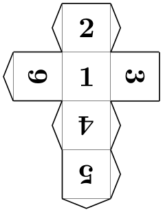
\usetikzlibrary {folding}
\tikz \pic [folding line length=6mm, numbered faces, transform shape]
{ cube
folding
};
Pic type cube truncated folding ¶
A folding of a truncated cube.
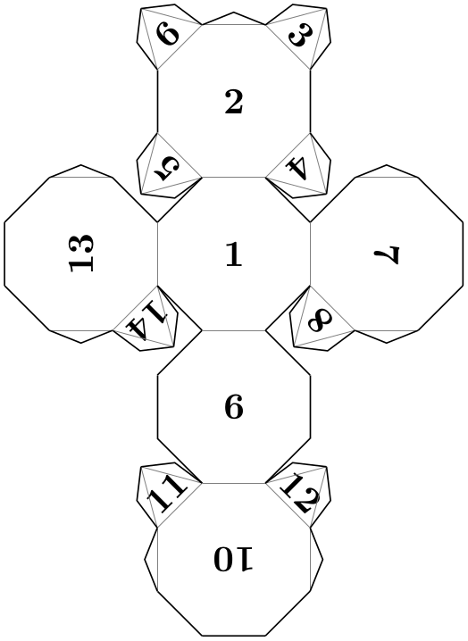
\usetikzlibrary {folding}
\tikz \pic [folding line length=6mm, numbered faces, transform shape]
{ cube
truncated
folding
};
Pic type octahedron folding ¶
A folding of an octahedron.
\usetikzlibrary {folding}
\tikz \pic [folding line length=6mm, numbered faces, transform shape]
{ octahedron
folding
};
Pic type octahedron folding
A folding of a truncated octahedron.
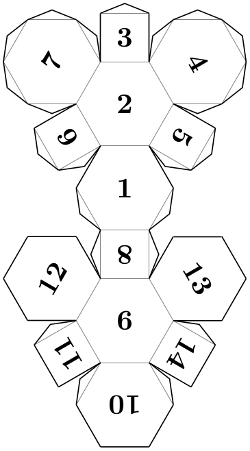
\usetikzlibrary {folding}
\tikz \pic [folding line length=6mm, numbered faces, transform shape]
{ octahedron
truncated
folding
};
Pic type dodecahedron folding ¶
A folding of a dodecahedron.
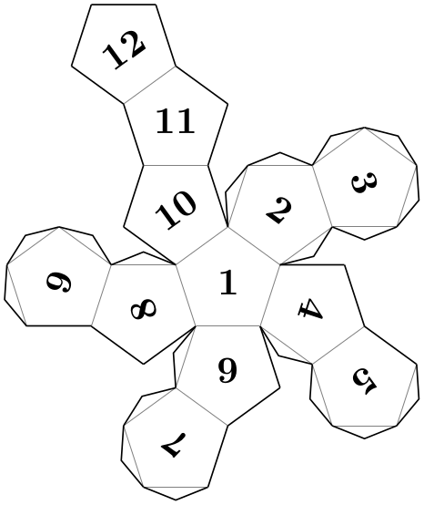
\usetikzlibrary {folding}
\tikz \pic [folding line length=6mm, numbered faces, transform shape]
{ dodecahedron
folding
};
Pic type dodecahedron' folding ¶
This is an alternative folding of a dodecahedron.
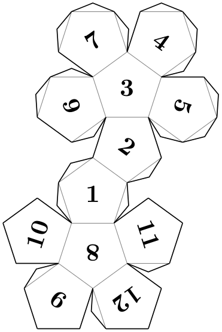
\usetikzlibrary {folding}
\tikz \pic [folding line length=6mm, numbered faces, transform shape]
{ dodecahedron'
folding
};
Pic type cuboctahedron folding ¶
A folding of a cuboctahedron.
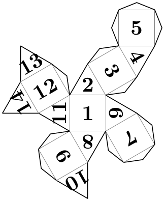
\usetikzlibrary {folding}
\tikz \pic [folding line length=6mm, numbered faces, transform shape]
{ cuboctahedron
folding
};
Pic type cuboctahedron truncated folding ¶
A folding of a truncated cuboctahedron.
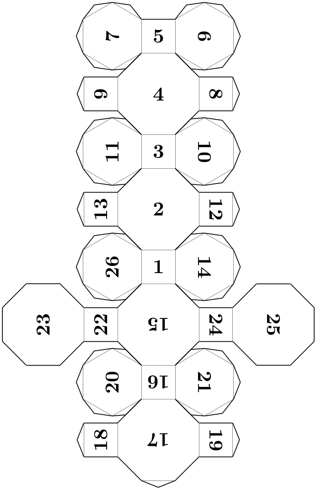
\usetikzlibrary {folding}
\tikz \pic [folding line length=6mm, numbered faces, transform shape]
{ cuboctahedron
truncated
folding
};
Pic type icosahedron folding ¶
A folding of an icosahedron.
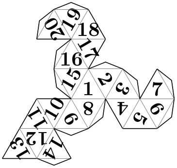
\usetikzlibrary {folding}
\tikz \pic [folding line length=6mm, numbered faces, transform shape]
{ icosahedron
folding
};
Pic type rhombicuboctahedron folding ¶
A folding of an rhombicuboctahedron.
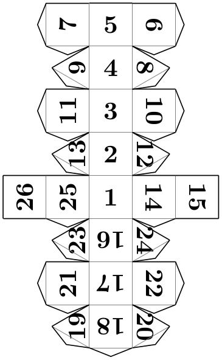
\usetikzlibrary {folding}
\tikz \pic [folding line length=6mm, numbered faces, transform shape]
{ rhombicuboctahedron
folding
};
Pic type snub cube folding ¶
A folding of a snub cube.
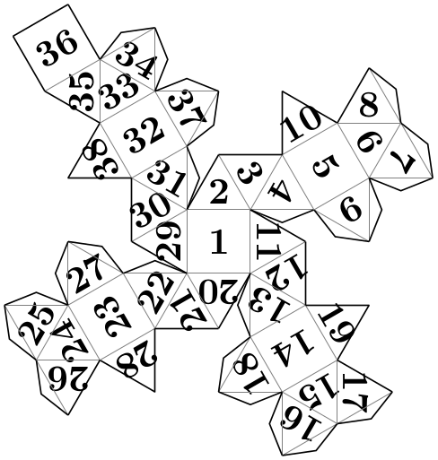
\usetikzlibrary {folding}
\tikz \pic [folding line length=6mm, numbered faces, transform shape]
{ snub
cube
folding
};
Pic type icosidodecahedron folding ¶
A folding of an icosidodecahedron.
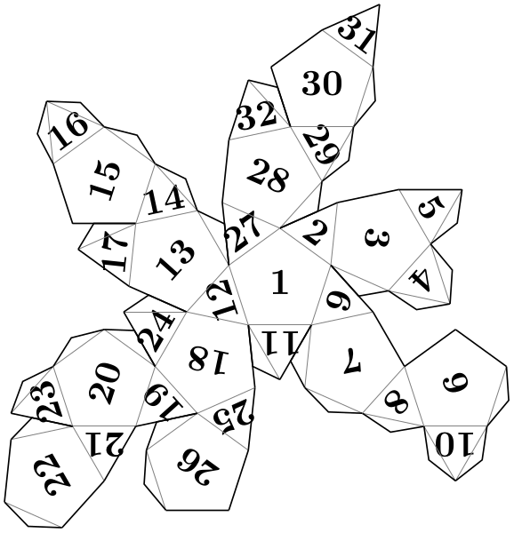
\usetikzlibrary {folding}
\tikz \pic [folding line length=6mm, numbered faces, transform shape]
{ icosidodecahedron
folding
};